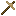

灌溉
灌溉
洒水器是一种以洒水器方块正下方为中心，对5x6x5区域进行灌溉的装置。当它周围有水的粒子效果时，表明它正在工作。面朝上放置的洒水器会对上方相同的5x6x5区域进行灌溉。


Tier I
洒水器由一块铜板锻造而成。
洒水器必须连接一个供水管道系统才能工作。这需要通过连接一系列铜制管道来实现。铜制管道最多能将水输送到32格外的洒水器。它们被连接到灌溉水箱或水泵站上。
8
Tier I
铜制管道是由铜板制成的。
多方块结构
水泵站必须放置在水源方块上方才能工作，并且需要连接上动力。灌溉水箱也可以通过其侧面的端口供水，前提是它们只能比水泵站或其他水箱高出最多3个方块的高度。





4
氧化管道与普通铜制管道功能相同，只是不能与另一种类型的管道连接。
8
温室端口内部设有一根管道，可用于使水流贯通温室墙壁！